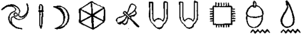
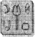

SİZLERİ yeraltı dünyasıyla ilgili bu gösterimizde yeni bir tiple tanıştırmanın zamanı geldi. Aslında tam olarak yeni bir tip sayılmaz. Onunla daha önce karşılaşmıştık. LEP’in kayıt kuyruğunda. Sayısız hırsızlık olayından yakalanıp cezaevine geri gönderilen, kleptoman cüce: Mulch Diggums. Güvenilmez biri, Artemis Fowl’un standartlarına göre bile. Sanki bu öyküde, yeterli sayıda ahlakdışı kişilik yokmuş gibi.
Mağarada yaşayan, sıradan bir cüce ailesinin çocuğu olarak dünyaya gelen Mulch, küçük yaşlarda, madenciliğin kendisine uygun bir iş olmadığına karar verip yeteneklerini başka bir alanda değerlendirmeyi daha uygun bulmuştu, yine kazma ve girme işinde, özellikle de Çamur Adamların mülklerine girme. Tabii ki bunun karşılığında sihrini kaybetme cezasına çarptırılacaktı. Konutlar kutsaldı. Kurala karşı gelirseniz, sonuçlarına katlanmak zorunda kalırsınız. Mulch umursamadı. Nasıl olsa sihirle işi olmazdı. Sihir maden ocaklarında pek işe yaramazdı.
Birkaç yüzyıl boyunca her şey yolunda gitmiş ve kendisine yerüstünde oldukça hatırı sayılır, kazançlı bir iş kurmuştu. Ta ki Jules Rimet kupasını gizli bir LEP ajanına satmaya kalkışıncaya kadar. O günden sonra şansı dönmüş ve yirmiden fazla kez tutuklanmıştı. Yaklaşık 300 yıllık bir süreyi hapse girip çıkarak geçirmişti.
Mulch’ın tünel kazmak konusunda, şaşılacak bir iştahı vardı ve bu, ne yazık ki bire bir çeviriydi. Cücelerin tünel kazış yöntemleri konusunda bilgi sahibi olmayanlar için onlara bu olayı elimden geldiğince zevkli bir dille anlatmaya çalışacağım. Erkek cüceler bazı sürüngenler gibi, çenelerini yerinden çıkararak, saniyede birkaç ton toprağı midelerine indirebilirler. Bu madde süper-randımanlı metabolizmaları tarafından bazı işlemlerden geçirilerek, gerekli minerallerinden ayrılır... ve bedenin öbür tarafından dışarı atılır. Etkileyici değil mi?
Şu an için Mulch LEP Merkezindeki taş duvarlı bir hücrede çürümekteydi. Ya da en azından hapiste çürüyen, akli dengesi yerinde bir cüce görüntüsü sergilemeye çalışıyordu. İşin aslı, çelik uçlu çizmelerinin içinde tir tir titriyordu.
Şu sıralar goblin-cüce savaşı alevlenmişti ve zekâ küpü bir LEP elfi, bir manga dolusu kafadan çatlak goblini Mulch’ın hücresine koymaya karar vermişti. Belki de bu bir hataydı. Ama büyük olasılıkla, kayıt kuyruğunda kendisini tutuklayan polis memurunun cüzdanını çalmaya kalkıştığı için bir intikamdı.
“Pekâlâ, cüce,” diye dudak büktü koca kafalı, yüzü siğil ve dövmelerle kaplı bir goblin. “Nasıl oluyor da, buradan kaçmak için tünel kazmıyorsun?”
Mulch duvarlara hafifçe vurdu. “Sağlam kaya.” Goblin güldü. “Ne olmuş yani? Cüce kafatasından daha sert olamaz ya.”
Yandaşları da güldü. Mulch da. Bunun akıllıca olduğunu düşünmüş olmalıydı. Yanlıştı.
“Bana mı gülüyorsun, cüce?”
Mulch gülmeyi kesti.
“Seninle birlikte,” diye düzeltti. “Seninle birlikte gülüyorum. Bu kafatası esprisi çok komikti.”
Goblin sümüklü burnu, Mulch’ınkinin bir santim yakınma gelinceye kadar ilerledi. “Bana yağ-cı-lık yapmaya mı kalkışıyorsun, cüce?”
Mulch bir yandan hesap yaparak, yutkundu. Şu an çenesini salarsa, öbürleri daha tepki bile gösteremeden, liderlerini yutabilirdi. Öte yandan, goblinleri hazmetmek çok zordu. Çok kemikliydiler.
Goblin yumruğunun etrafında bir ateş topu yarattı. “Sana bir soru sordum, yerden bitme.”
Mulch bedenindeki her ter bezinin hızlandırılmış olarak çalıştığını hissedebiliyordu. Cüceler ateşten hoşlanmazlardı. Alevler hakkında düşünmekten bile hoşlanmazlardı. Öbür peri cinslerinin aksine, cüceler yerüstünde yaşamak istemezlerdi. Güneşe çok yakındı. Bu Çamur Adamların Mal Varlığını Özgür Bırakma işinde çalışan biri için, oldukça komikti.
“Yo-yo buna hiç gerek yok,” diye kekeledi Mulch. “Ben yalnızca, dostça davranmaya çalışıyordum.”
“Dostça,” diye alay etti siğil surat. “Senin cinsin bu sözcüğün anlamım bile bilmez. Hepiniz hain birer korkaksınız. ”
Mulch diplomatça başını salladı. “Biraz kalleş olarak tanınırız. ”
“Biraz kalleş! Biraz kalleş ha! Erkek kardeşim Phelgm gübre yığını kılığına girmiş, bir grup cüce tarafından pusuya düşürülmüştü! Hâlâ tedavi görüyor!” Mulch anlayışla başını salladı. “Şu eski gübre yığını oyunu. Utanç verici. Kardeşlikle asla bağdaştıramadığım şeylerden biri.”
Siğil surat ateş topunu parmakları arasında hızla döndürdü. “Bu yeraltında beni gerçekten kızdıran iki şey var.”
Mulch birazdan bunların neler olduğunu öğreneceğini hissetti.
“Birincisi, kokuşmuş bir cüce.”
Bunda şaşılacak bir şey yoktu.
“Öbürü de kendi cinsine ihanet edenler. Ve duyduğuma göre sen her iki sınıfa da giriyormuşsun.”
Mulch hafifçe gülümsedi. “Bu da benim şansım işte.” “Şansın bununla bir ilgisi yok. Kader seni bana gönderdi.”
Başka bir gün olsa, Mulch, şansla kaderin aslında aynı anlama geldiğini söylerdi. Ama bugün değil. “Ateşten hoşlanır mısın, cüce?”
Mulch başını iki yana salladı.
Siğil surat sırıttı.
“Ne ayıp, oysa az sonra bu ateş topunu sana yedireceğim.”
Cücenin boğazı kurumuştu, yutkundu. Bu, Cüce Kardeşliği değil de neydi? Cüceler neden nefret ederler? Ateş. Büyü yoluyla ateş topları ortaya çıkarabilen yaratıklar hangileriydi? Goblinler. Yani cüceler kimlerle savaşırlardı? Bu gerçek bir beyinsizdi.
Mulch sırtını duvara dayadı.
“Dikkatli ol. Hepimiz havaya uçabiliriz.”
“Bizler değil,” dedi siğil surat, ateş topunu hızla uzun burun deliklerinden içeri çekerek. “Bizler ateşe dayanıklıyız.”
Mulch bundan sonra olacakların kesinlikle farkındaydı. Arka sokaklarda, buna defalarca tanık olmuştu. Bir grup goblin, yolunu şaşırmış bir cüce kardeşi köşeye kıstırıp etkisiz hale getirirler, sonra da liderleri çifte namlulu silahıyla suratını dağıtırdı.
Siğil suratın burun delikleri içine çektiği ateş topunu çıkartmaya hazırlanıyormuşçasına titredi. Mulch ürktü. Tek bir şansı vardı. Goblinler büyük bir hata yapmışlardı. Kollarını bağlamayı unutmuşlardı.
Goblin ağzından derin bir soluk alıp sonra da ağzını kapadı. Ateşi canlı tutmak için daha fazla hava basıncı gerekliydi. Başını geriye verip burnunu cüceye doğrulttu ve ateş topunu havalandırdı. Mulch başparmaklarını şimşek hızıyla siğil suratın burun deliklerine soktu. İğrençti, evet ama kesinlikle bir cüce kebabından iyiydi.
Ateş topunun çıkacak yeri kalmamıştı. Mulch’ın başparmaklarının ucuna çarpıp goblinin başının içine geri sekti. Goblinin gözyaşı kanallarının pek de dayanıklı olmadığı ortaya çıktı, bu yüzden alevler basınçtan sıkışarak goblinin gözlerinin hemen altından dışarı püskürdü. Bir alev denizi hücrenin tavanını kapladı.
Mulch başparmaklarını geri çekti, hızla sildikten sonra, tükürüğündeki doğal merhemin iyileştirme işlemine başlaması için ağzına soktu. Tabii ki sihrini kaybetmemiş olsaydı, sadece dileyerek yanık parmağı iyileşebilirdi. Ama bu, suçlarla dolu yaşamının karşılığında ödemesi gereken bedeldi.
Siğil surat pek iyi görünmüyordu. Başındaki her bir delikten dumanlar tütüyordu. Goblinler aleve dayanıklıydılar belki ama hatalı ateş topu kanallarını silip süpürmüş görünüyordu. Goblin bir yosun şeridi gibi sallanıp beton zeminin üzerine yüzüstü serildi. Bir şey çatırdadı. Bu büyük olasılıkla bir goblinin burnuydu.
Çete üyelerinin olaya tepkisi pek olumlu değildi.
“Bakın, patrona ne yaptı!”
“Şu kokuşmuş bodur.”
“Kızartalım onu.”
Mulch daha da geriye gitti. Liderleri etkisiz duruma gelince, geri kalan goblinlerin cesaretlerini kaybedeceklerini ümit etmişti. Ama öyle görünmüyordu. Doğasına kesinlikle aykırı olduğu halde, Mulch’ın saldırmaktan başka şansı kalmamıştı.
Çenesini salıp ileri doğru sıçradı ve dişlerini en baştaki goblinin kafasına geçirdi.
“Geği çekilin!” diye bağırdı, ağzını kaplayan engelin çevresinden. “Geği çekilin, yoğsa ağkadaşmız ölüğğ!”
Bir sonraki adımının ne olacağından kuşkulanan öbür goblinler donakaldılar. Ne de olsa hepsi, bir cücenin azıdişlerinin bir goblinin başına neler yapabileceğini görmüşlerdi. Pek hoş bir manzara değildi.
Hepsinin avuçlarına birer ateş topu belirdi.
“Sizi uyağıyorum, bakın!”
“Hepimizi yenemezsin, bodur.”
Mulch içinden gelen ısırma dürtüsüne engel oldu. Bu, cücelerin en karşı konulmaz tutkularından biriydi, binlerce yıldır tünel kazmış olmanın verdiği genetik bir bellek. Goblinin yavaşça kıpırdanıyor olmasının bir yararı yoktu. Mulch’ın seçme şansı kalmamıştı. Çete üyeleri üzerine doğru geliyordu ve ağzı dolu olduğu sürece çaresizdi. Çıtırdatma zamanıydı. Sözcük oyununu bağışlayın.
Birdenbire hücrenin kapısı açıldı ve LEP subaylarından oluşan koca bir tabur, bir anda içeri doluştu. Mulch, şakağına dayadıkları silahın, çelik namlusunun soğukluğunu hissetti.
“Tutukluyu tükür,” diye emretti bir ses.
Mulch emri yerine getirmekten mutluydu. Öğürdüğü, tükürükle kaplı goblin, bir anda yere yıkıldı.
“Siz goblinler, kaldırın şunları ortadan.”
Ateş topları teker teker söndürüldü.
“Benim suçum değil,” diye sızlandı Mulch, yerde kasılan siğil suratı işaret ederek. “Kendi kendini havaya uçurdu.”
Memur silahını kılıfına yerleştirip cebinden kelepçeleri çıkarttı.
“Birbirinize ne yaptığınız umurumda bile değil,” dedi, Mulch’ı topaç gibi çevirip kelepçeleri bileğine geçirerek. “Bana kalsaydı, hepinizi büyük bir odaya doldurur, bir hafta sonra da gelip sizden geriye kalanları toparlardım. Ama Yarbay Root, seni en kısa sürede yerüstünde görmek istiyor.”
“En kısa sürede mi?”
“Hatta daha da kısa sürede.”
Mulch Root’u tanıyordu. Yarbay Mulch’ın hükümet konağına yaptığı çok sayıdaki ziyaretten sorumluydu. Julius onu görmek istiyorsa, bu büyük olasılıkla bir içki içmek ya da sinemaya gitmek için değildi.
“Şimdi mi? Ama şu an gündüz. Yanarım.”
LEP memuru güldü.
“Gittiğimiz yer gündüz değil, dostum. Gittiğimiz yer, hiçbir şey değil.”
Root cüceyi zaman durdurumunun ana kapısında bekliyordu. Ana kapı da Foaly’nin bir başka icadıydı. Bu sayede periler içerideki değiştirilen akışı etkilemeden, rahatlıkla girip çıkabiliyorlardı. Bu yüzden Mulch’ın yüzeye çıkması altı saat kadar sürse de Root’un kendisini çağırmasından yalnızca birkaç saniye sonra, malikânede olabilecekti.
Bu, Mulch’ın ilk durmuş zaman deneyimiydi. Durup bu parlak halenin dışındaki yaşamın abartılı bir hızla akıp gidişini izledi. Arabalar akıl almaz bir hızda ilerliyorlar, bulutlar ufuk çizgisi üzerinde, sanki on şiddetinde bir rüzgârla sürüklenir gibi geçiyorlardı.
“Mulch, seni küçük ahlaksız,” diye kükredi Root. “Artık giysini çıkarabilirsin. Burada morötesi ışın filtresi var, en azından bana böyle söylediler.”
Cüceye El’de bir karartma giysisi verilmişti. Kaim tenlerine karşın cüceler, gün ışığına inanılmaz duyarlıydılar ve üç dakikadan kısa bir süre içinde yanıp kül olabilirlerdi. Mulch daracık giysisini üzerinden sıyırdı. “Seni görmek ne güzel, Julius.”
“Bana Yarbay Root diye hitap et.”
“Demek artık yarbaysın. Bunu duymuştum. Bürokratik bir hata yaptılar herhalde.”
Root dişleriyle purosunu öğütüp hamur kâğıdına çevirdi.
“Bu tür küstahlıklarla kaybedecek zamanım yok, mahkûm. Ve şu an çizmemin, poponu tekmeliyor olmamasının tek nedeni, sana verilecek bir görevim olması.”
Mulch kaşlarını çattı. “Mahkûm mu? Biliyor musun, benim bir adım var Julius?”
Root cüceyle aynı boya gelmek için çömeldi. “Ne tür bir hayal dünyasında yaşadığını bilmiyorum, mahkûm, ama gerçek hayatta sen bir suçlusun ve benim görevim yaşamını elimden geldiğince tatsızlaştırmak. On beş küsur kez aleyhine tanıklık ettim diye, benden nezaket bekliyorsan, unut gitsin!”
Mulch kelepçelerin kırmızı izler bıraktığı bileklerini ovaladı.
“Pekâlâ, Yarbay. Sigortalarını attırmaya gerek yok. Biliyorsun, ben katil değilim, yalnızca adi bir suçluyum.” “Duyduğum kadarıyla, aşağıdaki hücreleri bile değişikliğe uğratmışsın.”
“Benim suçum yok. Bana saldırdılar.”
Root ağzına yeni bir puro sıkıştırdı.
“Pekâlâ, her neyse. Yalnızca beni izle ve hiçbir şey de çalma.”
“Emredersiniz, Yarbay,” dedi Mulch, safça. Başka bir şey çalmasına gerek yoktu. Yarbay eğilmek gibi bir hata yaptığı sırada, Root’un durmuş zaman alanına-giriş kartını eline geçirmişti bile.
Birlikte Düzeltme çemberinin içinden geçip caddeye çıktılar.
“Bu malikâneyi görüyor musun?”
“Hangi malikâneyi?”
Root Mulch’ın çevresinde dolaştı. “Buna vaktim yok, mahkûm. Durmuş zaman diliminin neredeyse yarısı geçti. Birkaç saat sonra, en iyi memurlarımdan biri, mavi durulamayla karşı karşıya kalacak.”
Mulch omuz silkti. “Beni hiç ilgilendirmiyor. Ben yalnızca bir suçluyum, hatırlasana. Bu arada, benden ne yapmamı istediğini biliyorum ve yanıtım hayır.”
“Daha sormadım bile.”
“Çok açık. Ben bir ev hırsızıyım. Bu da bir ev. Sen içeri giremezsin, çünkü sihrini kaybedebilirsin ama benim sihrim gitti nasıl olsa. İki artı iki.”
Root purosunu tükürdü. “Hiç mi vatandaşlık gururun yok senin? Burada tüm yaşam düzenimiz, tehlikede.”
“Benim yaşam düzenim değil. Ha peri hapishanesi, ha insan hapishanesi. Benim için her ikisi de aynı.” Yarbay düşündü.
“Tamam, seni sümük. Cezanı elli yıl hafifletiyorum. ”
“Genel af istiyorum.”
“Ancak rüyanda görürsün, Mulch.”
“İster kabul et, ister etme.”
“Asgari. güvenlik içinde yetmiş beş yıl. ister kabul et, ister etme.”
Mulch düşünürmüş gibi yaptı. Tüm bunlar tamamen kuramsaldı, nasıl olsa tek amacı firardı.
“Tekli hücrede?”
“Evet, evet. Tekli hücrede. Yapacak mısın, artık?” “Pekâlâ, Julius. Ama yalnız-ca sen olduğun için.”
Foaly uygun bir iris kamerası arayışındaydı.
“Ela, sanırım. Ya da sarımsı kahve. Gerçekten de harika gözleriniz var, Bay Mulch.”
“Teşekkür ederim, Foaly. Annem her zaman, gözlerimin en çekici yanım olduğunu söylerdi.”
Root mekiğin içinde bir aşağı bir yukarı yürüyordu. “Siz ikiniz, zamanımızın kısıtlı olduğunun farkındasınız, değil mi? Renk uymasa da olur. Ona yalnızca bir kamera ver.”
Foaly lensi çözeltinin içinden bir cımbızla çıkarttı. “Bunlar boşu boşuna yapılmıyor, Yarbay. Ne kadar yakın bir eşleştirme yapılırsa gerçek gözle uyumu o kadar artar.”
“Her neyse, her neyse, bitir artık şu işi.”
Foaly Mulch’ı sıkıca tutarak çenesini kavradı.
“işte oldu. Yol boyunca, sizinle birlikteyiz.”
Foaly Mulch’ın kulaklarının içindeki kaim kıl tutamlarının arasına küçük bir silindir yerleştirdi.
“Şimdi ses donanımınız da tamam. Yardım istemek için aramanız gerekirse diye.”
Cüce yan yan gülümsedi. “Kusura bakmayın ama ben oldukça güvensiz biriyimdir. Her şeyi kendi başıma daha iyi hallettiğime inanırım.”
“On yedi mahkûmiyeti iyi olarak kabul edersek,” diye kıkırdadı Root.
“Oh, demek şaka yapmaya zamanımız var, öyle mi?” Root Mulch’ı omzundan yakaladı. “Haklısın. Zamanımız yok. Hadi gidelim.”
Mulch’ı çimenlikli bir yoldan kiraz ağaçlarıyla dolu bir koruluğa sürükledi.
“Buraya bir tünel kazıp bu Fowl denen kişinin, hakkımızda bu kadar çok şeyi nereden bildiğini öğrenmeni istiyorum. Büyük olasılıkla, gizli bir izleme aygıtı. Her ne ise, onu yok et. Yüzbaşı Short’u bulmaya çalış ve onun için neler yapabileceğine bak. Eğer ölmüşse, en azından biyolojik bomba için yol açılmış olur.” Mulch gözlerini kısarak manzaraya baktı. “Bundan hoşlanmadım.”
“Neden hoşlanmadın?”
“Arazinin konumundan. Kireçtaşı kokusu alıyorum.
Sağlam kayalara oturtulmuş bir temel. İçeri giriş olmayabilir.”
Foaly karşı tarafa doğru dört nala koştu. “Bir tarama yaptım. İlk yapı tamamen kayaların üzerine kurulu ama sonradan yapılan bazı ek binalar kil üzerine taşmış. Güney kanadındaki şarap mahzeninin tahta bir zemini varmış gibi duruyor. Sizin gibi bir ağzı olan biri için sorun olacağını sanmam.”
Mulch bunu bir hakaret değil de gerçeğin ifadesi olarak kabul etmeye karar verdi. Tünel pantolonunun içindeki popo kanatlarını açtı. “Pekâlâ. Geri çekilin.”
Root ve çevresini saran LEP memurları hızla bir yerlere kaçıştılar ama şimdiye kadar tünel kazan bir cüce görmemiş olan Foaly orada durup gizlice izlemeye karar verdi.
“İyi şanslar, Mulch.”
Cüce çenesini saldı.
“Hadi yallah,” diye mırıldandı, işe koyulmak üzere eğilirken.
Foaly çevresine bakındı.
“Herkes nereye -
Foaly cümlesini bitiremedi, çünkü yakın zamanda yutulmuş ve daha da yakın bir zamanda geri dönüşümü tamamlanmış koca bir parça balçık, bir tokat gibi yüzüne çarptı. Gözlerini silene kadar, Mulch titreşen bir çukurun içinde kaybolup gitmiş ve yüksek sesli kahkahalar kiraz ağaçlarını sallamaya başlamıştı.
* * *
Mulch kayanın içindeki volkanik bir kıvrımın içinden killi toprakla dolu bir damarı izledi. Oldukça yoğundu, fazla gevşek taş yoktu. Bir sürüde böcek vardı. Bir cücenin en önemli özelliği olan sağlam ve sağlıklı dişler için kesinlikle gerekliydi - bu olası bir eşin, ilk baktığı şeydi. Mulch kireçtaşına doğru alçaldı, karnı neredeyse kayayı yalayacaktı. Tünel ne kadar derin olursa, yüzeyden belli olma şansı da o kadar azalırdı. Bugünlerde, özellikle hareket algılayıcıları ve mayınlar yüzünden çok dikkatli olamıyordunuz. Çamur Adamlar değerli mallarını korumak için olağanüstü önlemler almaya başlamışlardı. Aslında haklıydılar.
Mulch sol yanında bir titreşim hissetti. Tavşanlar. Cüce iç pusulasıyla titreşimin konumunu belirledi. Yerel yabani hayvanların nerelerde kümelendiklerini bilmek her zaman işe yarardı. Tavşan sürüsünün çevresinden dolaşıp malikânenin temeli boyunca kuzey batıdan uzun bir tur attı.
Şarap mahzenlerinin yerini saptamak kolaydı. Şarap çökeltileri yüzyıllar boyunca yere damlamış ve mahzenin altındaki toprağa şarap kokusu sinmişti. Koku oldukça ağırdı, burası için pek de abartılı sayılmazdı. Hafif bir meyve aroması ama tadını hafifletecek kadar değil. En alt raftaki değerli şaraplardan biri olmalıydı. Mulch geğirdi. Bu kil iyiydi.
Cüce tırpana benzer çenesini havaya dikip döşeme tahtalarına vurmaya başladı. Kendini çentikli deliğe doğru iterek pantolonundaki geri dönüştürülmüş, son kil parçalarını da silkeledi.
Korkunç karanlık bir odadaydı, tam cücenin görüşüne uygun. Radarı onu, yerdeki üstü açık bir noktaya doğru yönlendirdi. Bir metre daha sola doğru gitse, kendini kırmızı İtalyan şarabıyla dolu, koca bir fıçının içinde bulacaktı.
Mulch çenesini yerine takıp duvarın öbür tarafına doğru sessizce yürüdü. Büyük bir deniz kabuğunu andıran kulağını, kırmızı bir tuğla işine yasladı. Bir süre hiç hareket etmeden durup evin titreşimlerini içine çekti. Bir sürü düşük frekanslı vızıltı vardı. Buralarda bir yerlerde bir jeneratör olmalıydı ve kabloların içinden geçen bir dolu meyve suyu.
Ayrıca ayak sesleri vardı. Yukarı doğru çıkan. Galiba üçüncü katta. Ve yakınlarda. Bir şangırtı. Metal ya da beton. İşte bir daha. Biri bir şeyler inşa ediyor olmalıydı. Ya da bir şeyleri kırıp döküyordu.
Ayağının önünden hızla bir şey geçti. Mulch onu içgüdüsel olarak ezdi. Bu bir örümcekti. Yalnızca bir örümcek.
“Üzgünüm, küçük dostum,” dedi gri renkteki lekeye. “Bugün biraz gerginim de.”
Basamaklar tabii ki tahtadandı. Kokusundan anlaşıldığı kadarıyla yüz yıllıktılar. Böylesi basamaklar, henüz onlara basmadan bile gıcırdarlardı. Davetsiz misafirleri ele verme konusunda her türlü alarmdan daha iyiydiler. Mulch kenarlardan tırmandı, adım adım. Duvarların hemen yanındaki tahtalar en çok desteklenen ve en az gıcırdayanlardı.
Tüm bunlar anlatıldığı kadar basit değildi. Cüce ayakları zor çalışmalara uygundur, bale yapmanın ya da tahta basamakların üzerinde denge sağlamanın narin karmaşıklıklarına değil. Yine de Mulch kazasız belasız kapıya ulaştı. Birkaç hafif gıcırdama oldu ama hepsi insan kulağının ya da bilgisayarın algılayamayacağı türde seslerdi.
Doğal olarak kapı kilitliydi, oysa kleptoman bir cüceyi fazla uğraştırmamak için kilitli olmayabilirdi de.
Mulch sakalına uzanıp sağlam kıllarından birini yoldu. Cüce kılı insan kılından çok farklıdır. Mulch’ın sakalıyla saçları onu yönlendirmeye yardımcı olan ve yeraltındaki tehlikelere karşı koruyan bir anten matrisiydi. Gözeneğinden kopartılır kopartılmaz, saç hemencecik bir keski kadar sertleşirdi. Mulch kıl henüz tam katılaşmadan ucunu kıvırdı. İşte size kusursuz bir maymuncuk.
Aleti bir kez hızla sağa sola oynattı ve kilit teslim oldu. Yalnızca iki emniyet kilidi vardı. Bu berbat bir güvenlik sistemiydi. Tam insanlara göre, asla aşağıdan gelen bir saldırı beklemezlerdi. Mulch parke döşemeli koridora adımını attı. Odanın her köşesi para kokuyordu. Burada bir servet kazanabilirdi, keşke buna zamanı olsaydı.
Pervazın hemen üzerinde kameralar vardı. Bu doğal gölgelerin arasına gizlenmiş, zevkli bir tasarımdı. Ama kesinlikle zekiceydi. Mulch bir saniye durup sistemin kör noktalarını hesapladı. Koridorda üç kamera vardı. Bu doksan saniyelik bir taramaydı. Aradan geçmek olanaksızdı.
“Yardıma mı ihtiyacın var?” dedi kulağının dibindeki ses.
“Foaly?” Mulch, gizli kameralı göz yuvarını en yakın kameraya çevirdi. “Şunlar hakkında bir şey yapabilir misin?” diye fısıldadı.
Cüce ustalıkla kullanılan bir klavyenin sesini duydu ve birdenbire sağ gözü bir kamera merceği gibi görüntüye yaklaştı.
“Kullanışlı,” diye soludu Mulch. “Kendime bir tane bunlardan almalıyım.”
Root’un sesi küçük hoparlörden çatırdadı. “Hiç şansın yok, mahkûm. Hükümet malı. Zaten hapiste böyle bir şeye neden gereksinim duyasın ki? Hücrenin karşı köşesini daha yakından görmek için mi?”
“Ne kadar da sevimlisin, Julius. Sorun nedir? Senin beceremediğin konuda başarılı olmam mı?”
Foaly’nin sesi Root’un iğrenç küfrünü bastırdı. “Pekâlâ, buldum. Basit bir video ağı. Dijital bile değil. Çanaklarımız aracılığıyla, her kameraya son on saniyenin görüntü döngüsünü yayınlayacağım. Bu sana birkaç dakika kazandıracaktır.”
Mulch rahatsızca ayaklarını sürüdü. “Bu ne kadar sürer? Burada biraz fazlaca ortadayım da.”
“Başladı bile,” diye yanıtladı Foaly. “İşe koyulabilirsin.”
“Emin misin?”
“Elbette eminim. Temel elektronik. Ta yuvadan beri insanları gizlice incelemekle uğraşıyorum. Bu konuda bana güvenmen gerekecek.”
Nesli tükenmekte olan bir canlı türünü korumak konusunda, bir LEP uzmanına güvenmektense, bir grup insana güvenmeyi yeğlerim, diye düşündü Mulch. Ama yine de yüksek sesle şöyle dedi: “Tamam, gidiyorum. Hazırım.”
Mulch koridorda sinsice ilerledi. Elleri bile sinsiydi, sanki kendini hafifletebilirmiş gibi havayı yokluyordu. Foaly her ne yaptıysa, işe yaramış olmalıydı, çünkü çevrede, merdivenlerden hızla inip ilkel barutlu tüfeklerini havada sallayan heyecanlı Çamur Adamlar yoktu.
Merdivenler. Ah merdivenler. Mulch merdivenlerden rahatsız olurdu. Onlar sanki önceden kazılmış kuyular gibiydiler. En yüklü ganimetlerin, kesinlikle zirvelerinde gizlendiğini düşünürdü. Bu çok kötü bir merdivendi. On sekizinci yüzyılla ya da aşırı zenginlikle bağdaştırılabilecek oymalarla süslü, rengi koyulaştırılmış meşeden yapılmıştı. Mulch parmağını oymalı bir tırabzana sürdü. Bu durumda, her ikisi geçerliydi.
Ama şimdi dalgın dalgın gezinmenin zamanı değildi. Basamaklar uzun süre boş kalmazlardı, özellikle de bir kuşatma sırasında. Her kapının ardında, avlarla dolu duvarlarına bir peri kellesi eklemek için bekleyen kim bilir kaç tane kana susamış polis memuru duruyordu.
Mulch hiçbir şeyi şansa bırakmadan, merdivenleri dikkatlice tırmandı. Sağlam meşe bile gıcırdadı. Mulch halılara basmamaya özen göstererek kenardan gitti. Antik halıların kaim dokumalarının altında, bir basınçlı alarm düzeni gizlemenin ne denli kolay olduğunu, sekizinci mahkûmiyetinden hatırlıyordu.
Başı hâlâ omuzlarına bağlı durumda, merdiven boşluğuna vardı. Ama bir başka sorun daha vardı, mayalanma. Aşırı hız yüzünden, cücelerin sindirimi patlamayla sonuçlanabilirdi. Fowl malikânesindeki gevşek toprak, çok iyi havalandırılmış olduğundan, Mulch’ın bağırsaklarına toprak ve minerallerle birlikte büyük oranda da hava girmişti. Şimdi de bu hava, dışarı çıkmak istiyordu.
Cücelerin görgü kurallarına göre, tünel içindeyken gaz çıkartmak ayıp sayılırdı ama Mulch’ın bu kurallara uyacak zamanı yoktu. Mahzendeyken, bir süre durup gazlarından kurtulmadığına pişmandı şimdi. Cüce gazlarının en büyük sorunu, yukarı doğru gidememeleriydi, yalnızca aşağı. Bir ağız dolusu balçık yedikten sonra geğirmenin, ne tür felaketler doğuracağını bir düşünmeye çalışın. Tüm sistemin yedeklenmesi. Bu pek hoş bir özellik değildi. Bu yüzden, cücelerin gövde yapısı istenmeyen balçığın atılmasına yardımcı olmak için tüm gazın alttan geçirilmesini sağlıyordu. Elbette bunu anlatmanın çok daha basit bir yolu da var ama o anlatım ancak yetişkinlerin okuyabilecekleri kitaplarda yer alabilir.
Mulch kollarını karnına doladı. Keşke açık havaya çıkabilseydi. Böylesi bir sahanlıktaki bir patlama, camları aşağı indirebilirdi. Cüce koridor boyunca ayaklarını sürüyerek karşısına ilk çıkan kapıdan dışarı fırladı.
Yine kameralar vardı. Hem de bir sürü. Mulch merceklerin görüş alanlarını inceledi. İçlerinden dördü genel zemini tarıyordu ama geriye kalan üç tanesi sabitti.
“Foaly? Orada mısın?” diye fısıldadı cüce.
“Hayır!” Bu tam Foaly’ye özgü alaycı bir yanıttı. “Medeniyetin çöküşü konusunda endişelenmekten çok daha önemli işlerim var benim.”
“Ya, teşekkürler. Tehlikedeki yaşamımın keyfini bozmasına izin verme sakın.”
“Bozmamasına çalışırım.”
“Zorlu bir iş var, tam sana göre.”
Foaly meraklanmıştı. “Ciddi mi? Devam et.”
Mulch gözünü, pervazın içinde duran, gizli kameralara dikti. “Bu kameraların nereyi görüntülediklerini öğrenmem gerek. Tam olarak.”
Foaly güldü. “Bu zor bir iş değil ki. Bu eski video sistemleri zayıf iyon ışınları yayarlar. Tabii ki bunları çıplak gözle görmen olanaksız ama iris kamerasıyla değil.”
Mulch’ın gözündeki donanım titreşip bir kıvılcım çıkardı.
“Off!”
“Affedersin. Küçük bir akım.”
“Beni uyarabilirdin.”
“Sana sonra kocaman bir öpücük veririm, geçer tatlım. Cücelerin dayanıklı olduklarını sanırdım.”
“Dayanıklıyız zaten. Geri döndüğümde, sana ne kadar dayanıklı olduğumuzu göstereceğim.”
Root’un sesi tartışmayı böldü. “Hiç kimseye, hücrendeki tuvaletin yeri dışında hiçbir şey göstermeyeceksin, mahkûm. Şimdi söyle, ne görüyorsun?”
Mulch iyona duyarlı gözüyle bir kez daha odaya baktı. Her kameradan akşamın son güneş ışıklarına benzer, hafif ışınlar yayılıyordu. Ve bu ışınlar Büyük Artemis Fowl’un bir portresinin üzerinde birleşiyordu.
“Hayır, resmin arkasında olmasın. Yo, lütfen.”
Mulch kulağını resmin camına yaklaştırdı. Elektrik akımı yoktu. Demek ki alarm yoktu. Yine de emin olmak için çerçevenin kenarını kokladı. Plastik ya da bakır yoktu. Tahta, çelik ve camdan yapılmıştı. Boyanın üzerinde biraz kurşun vardı. Çerçevenin arkasına tırnağını sokup kendine doğru çekti. Yanlardan bağlı resim kolayca ayrıldı. Yanından menteşeliydi. Ve arkasında, bir kasa vardı.
“Bu bir kasa,” dedi Foaly.
“Bunu biliyorum, salak herif. Burada dikkatimi yoğunlaştırmaya çalışıyorum! Yardımcı olmak istiyorsan, şifresini söyle.”
“Hiç sorun değil. Ah, bu arada küçük bir şok daha geliyor. Belki, bu kez küçük bebeğimiz rahatlamak için parmağını emmek isteyebilir.”
“Foaly. Şimdi seni ... Offff!”
“İşte. Röntgen ışınları devrede.”
Mulch gözlerini kısarak kasaya baktı. İnanılmazdı. İçindeki tüm işçiliği görebiliyordu. Gölgeli kabartmaların içinde emniyet kilitleri ve dilleri göze çarpıyordu. Mulch kıllı parmaklarını uzatıp şifre kadranını çevirdi. Birkaç saniye içinde önündeki kasa açıldı.
“Aaa,” dedi Mulch, hayal kırıklığıyla.
“Ne oldu?”
“Hiçbir şey. Yalnızca insan parası. Değerli bir şey yok.”
“Bırak onları,” diye emretti Root. “Başka bir odayı dene. Hadi.”
Mulch başıyla onayladı. Zamanı dolmadan başka bir odaya girdi. Ama kafasını kurcalayan bir şey vardı. Bu çocuk o kadar zekiyse, neden kasayı resmin arkasına saklamıştı? Bu çok basmakalıp bir şeydi. Hayır. Burada yanlış giden bir şeyler vardı. Bir şekilde kandırılıyorlardı.
Mulch kasayı kapatıp portreyi eski haline getirdi. Resim, menteşelerinin üzerinde ağırlıksızca sallandı. Ağırlığı yokmuş gibiydi. Resmi bir kez daha yerinden oynattı. Ve tekrar yerine koydu.
“Mahkûm. Ne yapıyorsun?”
“Kapa çeneni, Julius! Yani, bir dakika sessiz olun, Yarbay, demek istedim.”
Mulch gözlerini kısıp çerçevenin profiline baktı. Normalden biraz daha kalındı. Hem de oldukça kalındı. Hatta çerçevesini hesaba katarak bile. Kalınlık beş santimdi. Cüce resmin arkasındaki kalın desteğe tırnağını sürtüp kartonu yardı ve ortaya çıkan ...
“Bir kasa daha.”
Küçük bir tane. Belli ki ısmarlama yapılmıştı.
“Foaly. Bunun içini göremiyorum.”
“Kurşun kaplama. Artık tek başınasın, hırsız çocuk. Elinden geleni yap.”
“Her zamanki gibi,” diye mırıldandı Mulch, kulağını soğuk çeliğe dayayarak.
Deneme yanılma yoluyla kadranı hızla döndürdü. Bu ince bir işti. Kurşun ses çıkmasına engel oluyordu, Mulch’ın dikkatini yoğunlaştırması gerekecekti. Bu incelikte bir şeyin içinde en fazla üç emniyet kilidi bulunabilirdi.
Mulch soluğunu tutup kadranı çevirdi, her defasında bir diş. Sıradan bir kulak, yükselteçle bile, her sesi birbirinin aynıymış gibi duyabilirdi. Oysa Mulch’a göre her dişin kendine özgü bir imzası vardı ve çarklardan biri yerine oturduğunda çıkan ses, kulakları sağır edebilecek kadar güçlüydü.
“Bir,” diye soludu Mulch.
“Acele et, mahkûm. Zamanın dolmak üzere.”
“Bunu söylemek için mi, işimi yarıda kestin? Nasıl kumandan olduğunu şimdi daha iyi anlıyorum, Julius.”
“Mahkûm. Şimdi seni ...”
Ama yararı yoktu. Mulch kulaklığını çıkarıp cebine atmıştı. Artık tüm dikkatini elindeki işe verebilirdi.
“İki.”
Dışarıdan ses geliyordu. Koridordan. Biri oraya doğru geliyordu. Bir fil boyunda biriydi. Bu, hiç kuşkusuz, Düzeltme Timini darmadağın eden dağ adam olmalıydı.
Mulch gözüne akan ter damlasını kırpıştırdı. Dikkatini ver. Dikkatini ver. Dişler birbiri ardına tıkırdıyordu. Milimetre milimetre. Hiçbiri yuvasına oturmuyordu. Yer yavaşça sarsılıyormuş gibiydi, ama Mulch bunu hayal da ediyor olabilirdi.
Tıkır, tıkır. Hadi. Hadi. Mulch’ın parmakları terden yapış yapış olmuştu, kadran elinden kayıyordu. Mulch parmaklarını deri yeleğine sildi.
“Şimdi, bebek, hadi. .Konuş benimle.”
Tık. Trak.
“Evet!”
Mulch kasanın kolunu çevirdi. Hiçbir şey olmadı. Hâlâ bir engel vardı. Parmağının ucunu metal yüzeyin üzerinde gezdirdi, işte oradaydı. Bu küçük bir eğrilik. Mini minnacık bir anahtar deliğiydi. Sıradan bir maymuncuk için fazlasıyla ufaktı. Hapiste öğrendiği bir hileye başvurma zamanı gelmişti. Ama acele etmeliydi, midesi fırında güveç gibi fokurduyor ve adımlar oraya doğru hızla yaklaşıyordu.
Mulch çenesindeki sağlam kıllardan birini seçip onu yavaşça küçük deliğin içine soktu. Ucu öbür taraftan çıktığında, kılı kökünden koparttı. Kıl hemen kaskatı kesilip kilidin şeklini aldı.
Mulch soluğunu tutup kılı çevirdi. Kilit bir goblinin yalanı kadar yumuşakça açıldı. Güzeldi. Böylesi anlar için hapiste yatmaya bile değerdi.
Kleptoman cüce küçük kapağı geriye doğru hareket ettirdi. Bu harika bir işçilikti. Tam, perilerin demir ocaklarına layık bir işti. Bir gofret kadar hafifti. İçeride küçük bir bölme vardı. Ve bölmede...
“Oh, gökyüzündeki tanrılar,” diye soludu Mulch.
Sonra, dananın kuyruğu koptu. Mulch’ın yaşadığı şok kendini bağırsaklarında hissettirdi ve onlar da içlerindeki fazlalık havanın dışarı çıkması gerektiğine karar verdiler. Mulch belirtileri tanıyordu. Pelteleşen bacaklar, fokurdayan kasıklar, titrek popo. Geri kalan saniyelerde, Mulch kasanın içindeki nesneyi kaptığı gibi öne doğru eğilip destek sağlamak için dizlerine sarıldı.
İçindeki zorlanan hava akımı küçük bir siklon şiddetine ulaşmıştı ve engellenemiyordu. Ye böylece hava dışarı çıktı, oldukça rahatsız edici biçimde, Mulch’ın popo kanatlarının altından hızla esip arkasından gizlice yaklaşan iri yarı beyefendiye gürültüyle çarparak.
Artemis monitörlere yapışıp kalmıştı. Şu an, fidyeciler açısından her şeyin ters gittiği andı — harekâtın sondan bir önceki evresi. O ana kadar başarılı olmuş olmanın rahatlığıyla fidyeciler gevşeyip birer sigara yakar ve rehineleriyle sohbete başlarlardı. Sonra, bir anda kendilerini yüz-üstü yere yatırılmış, başlarının arkasına düzinelerce silah dayanmış durumda bulurlardı. Ama bu Artemis Fowl için geçerli değildi. O hata yapmazdı.
Periler kendilerine yardımcı olacak bir şeyler bulmak için ilk görüşme sahnelerinin kayıtlarını inceliyor olmalıydılar. Aradıkları şey oradaydı. Tek yapmaları gereken, bakmaktı. Yalnızca, tesadüfen oradaymış havasını yaratacak kadar derine gömülüydü.
Yarbay Root bir başka hileye daha başvurabilirdi. Kurnazdı, buna hiç kuşku yoktu. Bir çocuk tarafından yenilgiye uğramayı kabullenemeyecek biriydi. Bunu izlemeye dayanabilirdi.
Root’u düşünmek bile Artemis’in tüylerini ürpertmeye yetti. Bir kez daha kontrol etmeye karar verdi. Monitörleri gözden geçirdi.
Juliet hâlâ mutfakta, lavabonun içinde bir şeyler ovalıyordu. Sebzeleri yıkıyordu.
Yüzbaşı Short ranzasının üzerindeydi. Bir mezar kadar sessizdi. Şilteyi yere fırlatmaya paydos etmişti. Belki de onun hakkında yanlış düşünmüştü. Belki de bir planı yoktu.
Kâhya Holly’nin hücresinin dışındaki görev yerinde duruyordu. Garip. Şimdiye kadar devriye gezmeye başlamış olmalıydı. Artemis eline bir telsiz aldı.
“Kâhya?”
“Evet merkez. Dinlemedeyim.”
“Devriye geziyor olmamalı mıydın, sen?”
Bir sessizlik oldu. “Devriyedeyim zaten, Artemis. Ana sahanlığı geziyorum. Kasa odasına gidiyorum. Şu an sana el sallıyorum.”
Artemis sahanlıktaki kameralara göz attı. Her açıdan bomboştular. Ortada kesinlikle el sallayan bir hizmetkâr yoktu. Monitörleri birer birer inceleyip içinden saymaya başladı... işte! Her on saniyede bir, küçük bir kayma vardı. Bütün ekranlarda.
“Kapalı devre!” diye bağırdı, sandalyesinden sıçrayarak. “Sisteme bir kapalı devre yapmışlar!”
Hoparlörden, Kâhya’nın gittikçe hızlanan koşar adımlarını duyabiliyordu.
“Kasa odası!”
Artemis’in midesi bulanmaya başladı. Kandırılmıştı! O, koca Artemis Fowl, kandırılmıştı, üstelik göz göre göre. Bu akıl almaz bir şeydi. Buna neden olan kibriydi. Şu kendi lanet kibri. Ve şu an tüm planı gözlerinin önünde yok olmak üzereydi.
Telsizi Juliet’in frekansına çevirdi. Şu an, evdeki dahili hattı devre dışı bıraktığına pişmandı ama sistem, güvenli bir frekansta çalışmıyordu.
“Juliet?”
“Dinlemedeyim. ”
“Şu an neredesin?”
“Mutfakta. Tırnaklarımı rendeye kaptırdım.”
“Bırak, Juliet. Git tutukluya bak.”
“Ama Artemis, havuçlar kuruyacak!”
“Bırak, Juliet!” diye bağırdı Artemis. “Her şeyi bırak ve git tutukluya bak!”
Juliet söz dinledi ve telsiz dahil, elindeki her şeyi bıraktı. Artık günlerce somurturdu. Bu önemli değildi. Şu an, genç bir kızın kırılan kalbine üzülecek zaman yoktu. ilgilenilmesi gereken daha önemli konular vardı.
Artemis bilgisayarlı gözetleme sisteminin ana şalterini indirdi. Kapalı devreyi ortadan kaldırmanın tek yolu oturumu yeniden başlatmaktı. Birkaç ıstırap dolu saniyeden sonra karlı ekranlar titreşip berraklaştı. Görüntüler birkaç saniye öncekilere hiç benzemiyordu.
Kasanın olduğu odada çok garip bir şey vardı. Gizli bölmeyi bulmuş gibi görünüyordu. Onu bulmakla kalmamış, fısıltı kilidini de açmayı başarmıştı. Bu şaşırtıcı bir şeydi. Ama Kâhya onu ele geçirmek üzereydi. Yaratığın arkasından gizlice yaklaşıyordu, davetsiz konuk artık her an kendini yüz üstü halının üzerine serilmiş durumda bulabilirdi.
Artemis dikkatini Holly’ye çevirdi. Elf yatağını yerden yere vurma işine geri dönmüştü. Karyolayı durup dinlenmeden yere fırlatıyordu, sanki böylelikle...
“Juliet!” diye bağırdı Artemis, telsize. “Juliet! Oraya gitme!”
Ama bunun yararı yoktu. Kızın telsizi mutfak zemininin üzerinde vızıldıyordu ve Artemis’in tek yapabildiği, Kâhya’nın kız kardeşinin havuçlarla ilgili bir şeyler mırıldanarak, hücrenin kapısından içeri girişini, çaresizce izlemekti.
“Kasa odası!” diye haykırdı Kâhya, adımlarını hızlandırarak. İçgüdüleri tüm silahlarını ateşlemekten yanaydı ama eğitimi ona engel oluyordu. Perilerin donanımı, kendininkinden kesinlikle üstündü ve şu an, kapının öbür tarafında kendisine doğrultulmuş bekleyen, kim bilir kaç namlu vardı. Yo, bunun gibi özel bir durumda tedbirli olmak, hiç kuşkusuz en büyük cesaret örneğiydi.
Kâhya avuçlarından birini tahtaya yaslayıp titreşimleri hissetmeye çalıştı. Hareket yoktu. Demek ki makine yoktu. Kâhya parmaklarını tokmağın çevresinde yuvarlayıp yavaşça çevirdi. Öbür eliyle omzundaki tabanca kılıfından tam otomatik bir Sig Sauer çıkarttı. Ok tüfeğiyle kaybedecek zamanı yoktu, öldürücü bir atış olmalıydı.
Kapı Kâhya’nın umduğu gibi sessizce açıldı, ne de olsa evdeki her menteşeyi kendi elleriyle yağlamıştı. Önünde bir şey duruyordu ... İşin aslı, Kâhya bu şeyin ne olduğundan pek emin değildi. Bu denli zeki olmasa daha doğrusu ilk bakışta bu şeyin titreşen devasa bir ...
Ve o şey patladı, üstelik inanılmaz oranda tünel artığını, doğrudan zavallı hizmetkârın üzerine fışkırtarak! Bu aynı anda, yüz balyozla dövülmek gibi bir şeydi. Kâhya bir anda havalanıp duvara fırlatıldı.
Ve orada uzanmış, bilincini kaybetmek üzereyken, Efendi Artemis’in bu görüntüyü kaydetmemiş olması için dua etti.
Holly gücünü yitiriyordu. Yatak ağırlığının neredeyse iki katı kadardı ve kabartmaları avuçlarında acımasız izler bırakıyordu. Ama artık duramazdı. Sonuca bu kadar yaklaşmışken.
Karyolayı bir kez daha beton zemine fırlattı. Gri bir toz bulutu bacaklarının arasında dönerek havalandı. Fowl planının her an farkına varıp Holly’ye yeni bir şırınga tedavisi uygulayabilirdi. Ama o zamana kadar...
Holly acıya katlanmak için dişini sıkıp karyolayı diz hizasına kadar kaldırdı. Sonra onu gördü. Grinin ortasındaki o kahverengi çizgiyi. Bu gerçek olabilir miydi?
Yüzbaşı Short acısını unutup yatağı yere attı ve aceleyle diz çöktü. Gerçekten de betonun arasından ince bir toprak parçası görünüyordu. Holly çizmesinin içinden meşe palamudunu çıkartıp kan içindeki parmaklarının arasında sıkıca tuttu.
“Seni toprağa geri veriyorum,” diye fısıldadı, yumruğunu daracık aralığın içine sokarak. “Ve hakkım olan armağanı istiyorum.”
Bir kalp atışı süresince hiçbir şey olmadı. Belki de iki. Sonra Holly tıpkı elektrikli bir troll parmaklığına çarpılmış gibi sihrin koluna hücum ettiğini hissetti.
Holly sarsıntının şiddetiyle odanın içinde bir topaç gibi döndü. Bir süre için altüst olmuş dünyası rengârenk bir çiçek dürbününe dönüştü ama her şey durulduğunda, Holly az önceki yenik elf değildi artık.
“Pekâlâ, Efendi Fowl.” Holly mavi renkteki büyülü kıvılcımların yaralarını iyileştirmesini izlerken sırıttı. “Burayı terk etmek için gerekli izni senden almam için ne yapmam gerekecek bakalım?”
“Her şeyi bırak,” diye somurttu Juliet. “Her şeyi bırak ve git tutukluya bak.” Sarı buklelerini ustaca omzuna attı. “Hizmetçisi filan olduğumu sanıyor herhalde.” Avcunun içiyle hücrenin kapısına vurdu.
“İçeri geliyorum, peri kızı, bu yüzden utanç verici bir şey yapıyorsan, lütfen, buna bir son ver.”
Juliet dijital kadrana şifreyi girdi. “Ve hayır, sebzelerin ya da yıkanmış meyvelerini getirmedim. Ama benim hatam değil. Artemis, hemen buraya gelmem için ıs-rar et-ti ...”
Juliet konuşmayı kesti, çünkü onu dinleyen kimse yoktu. Boş bir odada vaaz veriyordu. Beyninin kendisine bir açıklama yapmasını bekledi. Hiçbir mesaj gelmedi. En sonunda beyninden çevresine bir kez daha bakması gerektiği düşüncesi süzüldü.
Beton küpten içeri doğru, çekingen bir adım attı. Hiçbir şey yoktu. Yalnızca gölgelerin arasında, yumuşak ve titrek bir ışık vardı. Bir pus gibiydi. Herhalde bu aptal gözlük yüzündendi. Yeraltında aynalı gözlük takarak, bir şey görmeyi nasıl düşünebilirdiniz ki? Ve öylesine demodeydiler ki, yeniden moda bile olmamışlardı henüz.
Juliet suçlu gözlerle monitöre göz attı. Yalnızca kaçamak bir bakış, ne zararı olabilirdi ki? Gözlüğünü kaldırıp gözyuvarlarını odanın çevresinde döndürdü.
Tam o sırada, önünde biri belirdi. Bu boşluktan çıkan biriydi. Bu, Holly idi. Gülümsüyordu.
“Oh, sen misin? Nasıl olur da -
Peri bir el hareketiyle Juliet’in sözünü kesti.
“Neden şu gözlüğünü çıkartmıyorsun, Juliet? Sana hiç yakışmıyorlar.”
Haklı aslında, diye düşündü Juliet. Ne kadar da tatlı bir sesi vardı. Başlı başına bir koro gibiydi. Böylesi bir sesle nasıl tartışabilirdiniz ki?
“Tabii. Mağara adamı gözlüğünü çıkar. Bu arada, ne hoş bir ses bu. Işınla beni ve tüm bunlar.”
Holly Juliet’in şifreli sözlerini çözmeye yeltenmedi. Kız beynini tam anlamıyla denetleyebildiğinde bile bunu yapmak yeterince güçtü zaten.
“Şimdi. Basit bir soru.”
“Dert değil.” Ne harika bir fikirdi.
“Evde kaç kişi var?”
Juliet düşündü. Bir artı bir artı bir.
Ve bir tane daha? Hayır, Bayan Fowl orada değildi. “Üç,” dedi Juliet, en sonunda. “Ben, Kâhya ve elbette ki, Artemis. Bayan Fowl oradaydı ama sonra atta gitti, sonra o atta gitti.”
Juliet kıkırdadı. Bir espri yapmıştı. Üstelik iyi bir espri.
Holly bir an soluklanıp bu konuda bir açıklama istemeyi aklından geçirdi ama sonra vazgeçti. Sonradan bu yaptığının bir hata olduğunu anlayacaktı.
“Buraya herhangi biri geldi mi hiç? Yani benim gibi biri?”
Juliet dudağını ısırdı. “Bir küçük adam vardı. Seninki gibi bir üniforma giymiş. Ama sevimli değildi. Hiç değildi. Yalnızca bağırdı ve pis kokulu bir puro içti. Felaket bir yüzü vardı. Bir domates gibi kırmızıydı.”
Holly neredeyse gülümsedi. Root şahsen gelmişti. Hiç kuşkusuz, görüşmeler felaket geçmişti.
“Başka biri?”
“Bildiğim kadarıyla, hayır. O adamı bir daha görürsen, ona bir süre kırmızı etten uzak durmasını söyle. Bir kalp krizi geçirmek üzere.”
Holly sırıtmamaya çalıştı. Juliet hipnotizma altında doğal halindekinden daha mantıklı konuşan tek insandı, herhalde.
“Tamam. Ona söylerim. Şimdi, Juliet, odamda kalmanı istiyorum ve ne duyarsan duy, sakın dışarıya çıkma.”
Juliet kaşlarını çattı. “Bu odada mı? O kadar sıkıcı ki. Televizyon yok, hiçbir şey yok. Yukarı, oturma odasına çıkamaz mıyım?”
“Hayır, burada kalman gerek. Zaten, az önce buraya bir duvar televizyonu kurdular. Sinema ekranı boyunda. Güreş programı yayınlanıyor, hem de günde yirmi dört saat.”
Juliet sevinçten neredeyse bayılacaktı. Hayal gücünün ürünü görüntüleri soluk soluğa izlemek üzere, koşarak hücreye girdi.
Holly başını salladı, iyi, diye düşündü, en azından içimizden biri mutlu.
Mulch son kalan toprak parçalarım da silkelemek için poposunu salladı. Keşke annesi onu, Çamur Adamların üzerlerine toprak sıçratırken görebilseydi. Bu ince alay olmalıydı ya da onun gibi bir şey. Mulch’ın okuldayken dilbilgisiyle arası pek iyi değildi. Ne de şiirle. Asla önemini anlayamamıştı. Maden ocaklarında önemli olan yalnızca iki cümle vardı: “Bakın, altın!” ve “Mağara çöküyor, herkes dışarı!” Bu cümlelerde ne gizli bir anlam vardı, ne de kafiye.
Cüce aşağı bölgelerinden yayılan fırtına yüzünden ardına kadar açılan popo kapağının düğmelerini kapadı. Şimdi kaçıp kurtulma zamanıydı. Kimseye görünmeden kaçmakla ilgili tüm ümitleri kırılmıştı. Kesinlikle.
Mulch kulaklığım cebinden çıkarıp kulağına sıkıca yerleştirdi. Hiç belli olmazdı, LEP bile bazen işe yarayabilirdi.
“... Ve seni elime geçirir geçirmez, mahkûm, o maden ocaklarında kalmış olmayı dileyeceksin ...”
Mulch iç geçirdi. Pekâlâ. Oralarda bir değişiklik yoktu.
Cüce kasanın içinde bulduğu hâzineyi avcunun içinde sıkıca tutup ayak izlerini takip ederek geri dönüş yoluna geçti. Hayretler içinde, tırabzanlara dolanmış biri olduğunu gördü. Aslında Mulch geri dönüştürdüğü toprakların fil boyundaki Çamur Adamı birkaç metre yükseğe havalandırmasına hiç mi hiç şaşırmamıştı. Cüce gazının Alpler’de çığ düşmesine yol açtığı bilinirdi. Onu asıl hayrete düşüren, adamın ilk başta ona o kadar yaklaşmış olmayı başarabilmesiydi.
“Çok iyisin,” dedi Mulch, parmağını kendinden geçmiş korumaya doğru sallayarak. “Ama Mulch Diggums’ın beden patlamasını tadan hiç kimse ayakta kalmayı başaramaz.”
Çamur Adam kımıldadı, hafifçe titreşen göz kapaklarının altından bembeyaz gözleri göründü.
Root’un sesi cücenin kulağının içinde yankılandı. “Çamur Adam uyanıp iç organlarını yeniden düzenlemeden kıpırdasan iyi olur, Mulch Diggums. Onun, koca bir Düzeltme Timini alt ettiğini biliyorsun.”
Mulch yutkundu, birdenbire kabadayılığından eser kalmamıştı.
“Koca bir Düzeltme Timi mi? Belki de yeraltına insem daha iyi olacak ... yani görevin yararı açısından.” inleyen korumanın yanından hızla uzaklaşan Mulch basamakları ikişer ikişer inmeye başladı. Koridorda gerçek bir kaim bağırsak fırtınasına neden olduktan sonra, çatırdayan basamakları kafaya takmaya gerek yoktu.
Mulch tam mahzenin kapısına gelmişti ki önünde, titrek bir ışığın içinde biri belirdi. Mulch onu tanıdı, Rönesas Usları kaçakçılık olayında, kendisini tutuklayan memurdu.
“Yüzbaşı Short.”
“Mulch. Seni burada görmeyi beklemiyordum.” Cüce omuz silkti. “Julius’un pis bir işi vardı. Birinin temizlemesi gerekiyordu.”
“Anlıyorum,” dedi Holly, başını sallayarak. “Nasıl olsa sihrini kaybettin. Akıllıca. Neler buldun peki?” Mulch bulduğu şeyi Holly’e gösterdi. “Bu kasadaydı.”
“Kitabın bir kopyasını!” dedi Mulch, soluk soluğa. “Bu duruma düştüğümüze şaşmamak gerekir. Çocuğun elinde tamamen oyuncak olduk.”
Mulch mahzenin kapısını açtı. “Gidelim mi?” “Yapamam. Evi terk etmemem konusunda kesin emirler aldım.”
“Siz sihirli tipler ve sonu gelmez kurallarınız. Tüm bu hokus pokuslardan kurtulmanın nasıl bir rahatlık olduğunu hayal edemezsiniz.”
Yukarıdaki merdiven boşluğundan, bir dizi gürültü yükseldi. Sanki her şeyi kırıp döken bir troll, kristal bir sarayın içinde geziyormuş gibi.
“Ahlaki konuları daha sonra da tartışabiliriz. Şu an, bence tek yapmamız gereken şey, ortadan kaybolmak.” Mulch başını salladı. “Anlaşıldı. Bu adam, tek başına koca bir Düzeltme Timini alt etmiş.”
Holly duraksadı, yarı kalkanlıydı.
“Koca bir timi mi? Hımm. Tam donanımlı. Korkarım ki ...”
Holly’nin dedikleri yavaş yavaş sessizliğe, en sonunda da kulaklarına varan bir gülümsemeye dönüştü. Mulch boş boş gezinmek istiyordu. Ağır silahlarla donanmış bir Recon memurunun şehre inip hiç ummadığı bir anda bir grup insanla karşılaşmasını izlemekten daha eğlenceli bir şey olamazdı. Yüzbaşı Short bu Fowl denen kişinin hesabını görünceye kadar malikânesinden gitsin diye neredeyse ona yalvaracaktı.
Sözü edilen Fowl adındaki kişi, gözlem odasından her şeyi izliyordu. İnkâr edilecek bir şey yoktu. İşler hiç de iyi görünmüyordu. Hem de hiç. Ama kesinlikle çaresiz değildi. Hâlâ ümit vardı.
Artemis son birkaç dakikada geçen olayları sıraya dizdi. Malikânenin güvenliği tehlikeye girmişti. Kasa odası bir tür peri osuruğuyla darmadağın edilmişti. Kâhya yine aynı acayip gaz yüzünden, felçli gibi şuursuzca yerde yatıyordu. Güçlerini geri kazanmış rehine peri evin içinde serbestçe dolaşıyordu. Temellerin altında, peri kurallarını pek umursamıyormuş gibi görünen, deri giysiler giymiş çirkin bir yaratık tünel kazıyordu. Ve Peri Halkı Kitabın kopyasını bulmuştu, bir İsviçre banka kasasında bulunan diske kayıtlı bir kopyası da dahil, çok sayıdaki kopyasından birini.
Artemis alnına düşmüş bir tutam siyah saçı parmaklarıyla taradı. Bu özel senaryonun iyi yanlarını ortaya çıkartmak için çok sıkı uğraşması gerekecekti. Kâhya’nın kendisine öğrettiği gibi birkaç kez derin soluk alıp verdi.
Bir süre düşündükten sonra, aslında tüm bu etkenlerin her iki tarafın da kapsamlı stratejilerinin yanında pek bir anlam ifade etmediğini fark etti. Yüzbaşı Short
hâlâ malikânede tutsaktı. Ve durdurulmuş zaman diliminin süresi dolmak üzereydi. Kısa bir süre sonra, LEP’in biyolojik bombasını fırlatmaktan başka çareleri kalmayacaktı ve işte o zaman Artemis Fowl öldürücü darbesini vuracaktı. Elbette ki her şey Yarbay Root’a bağlıydı. Root zihinsel açıdan göründüğü kadar yetersizse eğer, planın bir anda yerlebir olacağı kesindi. Artemis peri ekibinden birinin görüşme sırasında kırdığı ‘pot’un farkına varacak kadar kurnaz olmasını ümit etti.
Mulch poposundaki kapağı açtı. Maden ocaklarında dedikleri gibi artık biraz pislik emme zamanıydı. Cüce tünelleriyle ilgili sorun kendi kendilerine kapanmalarıydı, bu yüzden geldiğiniz yoldan geri dönmeniz gerektiğinde yepyeni bir oyuk açmanız gerekirdi. Bazı cüceler daha az yoğunlukta ve kolay sindirilebilen balçıkları çiğneyerek izlerinin tam üzerinden gitmeyi başarırlardı. Oysa Mulch yeni bir tünel açmayı yeğlerdi. Bazı nedenlerden ötürü iki kez aynı balçığı yemek ona pek cazip gelmiyordu.
Çenesini yeniden yerinden çıkaran cüce bir torpil hızıyla döşeme tahtalarının içindeki deliğe yöneldi. Toprağın içindeki minerallerin kokusu burun deliklerine dolar dolmaz, kalp atışları duruldu. Güvendeydi, o artık güvendeydi. Yeraltındaki bir cüceyi hiçbir şey yakalayamazdı, bir Skaylian kaya solucanı bile. Yeraltına varmayı başarabilirse tabii...
On çok güçlü parmak, Mulch’ı ayak bileklerinden yakaladı. Bu, kesinlikle onun uğurlu günü değildi. Önce siğil surat, şimdi de bu cani adam. Bazı insanlar asla akıllanmazlardı. Genellikle de Çamur Adamlar.
“Bığğğak,” diye mırıldandı, yerinden çıkan çenesi anlamsızca dalgalanarak.
“Hiç şansın yok,” diye bir yanıt geldi. “Bu evi yalnızca bir ceset torbasının içinde terk edebilirsin.”
Mulch bedeninin geriye doğru çekildiğini hissedebiliyordu. Bu adam güçlüydü. Bir cüceyi sıkıca kavrayıp yerinden oynatmayı başarabilecek çok sayıda yaratık yoktu. Mulch toprağı eşeleyerek mağara büyüklüğündeki ağzının içine avuç dolusu şarap kokulu balçık tıkıştırdı. Tek bir çaresi vardı.
“Gel buraya, seni küçük goblin. Çık oradan.”
Goblin mi? Düşmanına püskürteceği balçığı çiğnemekle meşgul olmasaydı, Mulch bu haksız söze çok öfkelenirdi.
Adam konuşmayı kesti. Herhalde, Mulch’ın poposundaki kapağı ve poposunu fark etmişti. O kasa odasında olanlar, bir kez daha başına gelmek üzereydi.
“Oh...”
Bu ‘Oh’tan sonra neyin geldiğini tahmin etmek size kalıyor ama ben ‘sevgilim’ sözcüğünün gelmediği konusunda bahse bile girerim. Zaten Kâhya’nın sözünü bitirmeye zamanı olmadı, çünkü tam o anda, elinde tuttuğu şeyi bırakmak gibi akıllıca bir karar verdi. Bu akıllıca bir karardı, çünkü Mulch’ın, topraksal artıklarını fırlatma ânıyla çakışıyordu.
Koca bir topak sıkıştırılmış balçık tıpkı bir gülle gibi henüz bir saniye önce Kâhya’nın başının durduğu noktaya doğru hızla fırlatılmıştı. Başı hâlâ orada duruyor olsaydı eğer, bu çarpışma onu Kâhya’nın omuzlarından ayırmış olacaktı. Bu yeteneklere sahip bir koruma için şerefsiz bir sondu. Neyse ki bu sırılsıklam füze yalnızca kulağını yalayıp geçmişti. Buna karşılık, balçık topunun şiddeti Kâhya’yı bir buz patencisi gibi çevirip birkaç dakika içinde ikinci kez kıç üstü yere serecek güçteydi.
Kâhya yeniden görmeye başlayana kadar, cüce bir çamur girdabının içinde gözden kaybolmuştu bile. Kahya’nın yapılacak işler listesinde ‘yeraltında ölmek’ ilk sıralarda yer almıyordu. Ama o gün gelecek, peri, diye düşündü acımasızca içinde. Ve gelecekti de. Ama bu başka bir öyküydü.
Mulch’ın devinirliği, onu yeraltına doğru sürükledi. Killi toprakla dolu kanalın içinde birkaç metre ilerledikten sonra, hiç kimsenin onu izlemediğini fark etti. Toprağın tadı kalp atışlarını düzene sokmuşken, artık kaçış planını uygulama zamanının geldiğine karar verdi.
Cüce yönünü değiştirip az önce dikkatini çeken tavşan yuvasına doğru tünel kazmaya başladı. Biraz şansı varsa, Foaly, malikâne topraklarına bir deprem testi uygulamamış olurdu, yoksa çevirdiği dolap ortaya çıkardı. Kaybolmuş bir mahkûm için endişelenmekten daha önemli işleri olduğu gerçeğine güvenmek zorundaydı. Julius’ı aldatmak hiç de zor değildi, ama ya Foaly? O zeki biriydi.
Mulch’ın iç pusulası onu doğru yöne çevirdi ve birkaç dakika içinde tünellerinde hoplaya zıplaya ilerleyen tavşanların hafif titreşimlerini hissetmeye başladı. Hayalini gerçekleştirmek istiyorsa eğer, şu andan itibaren zamanlamaya çok önem vermesi gerekiyordu. Mulch, kazı hızını azaltıp parmakları tünelin duvarına değinceye kadar yumuşak kili yavaşça kemirdi. Sürekli öbür yöne bakmaya çalışıyordu, çünkü her gördüğü LEP Merkezindeki ekranlara yansıyacaktı.
Mulch tırmanışa geçen bir örümcek gibi parmaklarını tünelin zeminine dayayıp beklemeye koyuldu. Uzun sürmedi. Birkaç saniye sonra, yaklaşan bir tavşanın ritmik vuruşlarını hissetti. Hayvancağızın arka ayakları Mulch’ın kurduğu tuzağa değer değmez, cüce güçlü parmaklarını boynuna kenetledi. Zavallı hayvanın hiç şansı kalmamıştı.
Affedersin, dostum, diye düşündü cüce. Başka bir yolu olsaydı... Tavşanı deliğin içinden çeken Mulch çenesini yerine takıp avaz avaz bağırmaya başladı. “Mağara çöküyor! Mağara çöküyor! imdat! imdat!”
Şimdi sıra ustalık gerektiren bölümdeydi. Mulch tek eliyle çevresini saran toprağı sallayıp başının üzerine taş parçaları yağdırdı. Öbür eliyle sol gözündeki iris kamerasını çıkartıp tavşanın gözüne taktı. Zifiri karanlık ve çöken mağara yanılgısıyla, bu hızlı değişikliği fark etmeleri neredeyse olanaksızdı.
“Julius! Lütfen. Yardım et.”
“Mulch! Neler oluyor? Pozisyonun nedir?” Pozisyonun mu nedir? diye düşündü, cüce duyduklarına inanamayarak. Kriz ânında bile, kumandan değerli dağarcığını bir yana bırakamıyordu.
“Ben... Ahhh...” Cüce, gittikçe yavaşlayarak bir gargaraya dönüşen en son çığlığını attı.
Belki de biraz fazla duygusaldı, ama Mulch abartıya bayılırdı. Ölmekte olan hayvana pişmanlık dolu bir bakış fırlatıp çenesini saldı ve güney doğuya doğru yelken açtı. Özgürlük ona el sallıyordu.